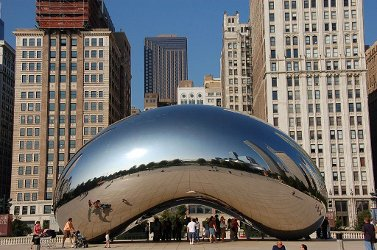

Cloud Gate
Anish Kapoor · 2004–06 · Stainless steel · 10 × 20 × 13 m
In copyright. Look and learn: shown for study, not for download. · Photo: biskuit, CC BY-SA 2.0
The skin is 168 stainless steel plates, cut and bent with the help of computers and robots and welded together on site into 744 metres of seam. It was meant to weigh 60 short tons and came out at 110, so the garage wall and restaurant roof beneath it had to be reinforced. The unpolished shell was shown at the opening of Millennium Park in July 2004; a crew of 24 ironworkers then spent most of 2005 grinding and polishing the seams. The estimate was $6 million, and by 2006 the cost had reached $23 million.